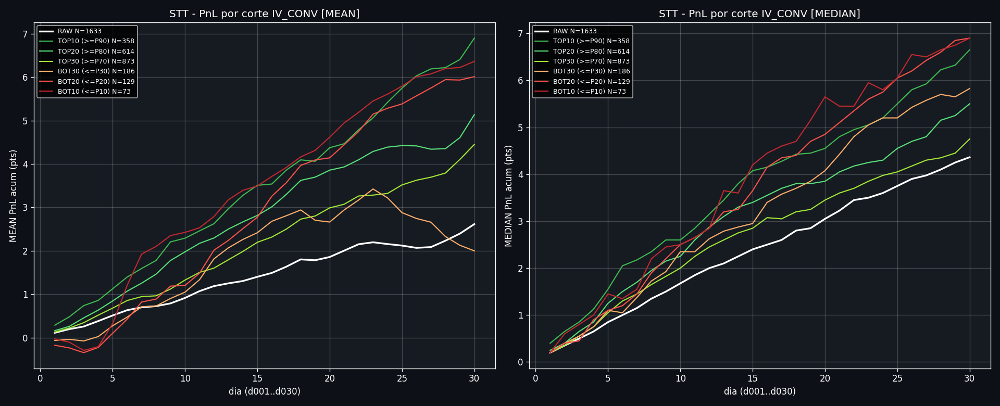
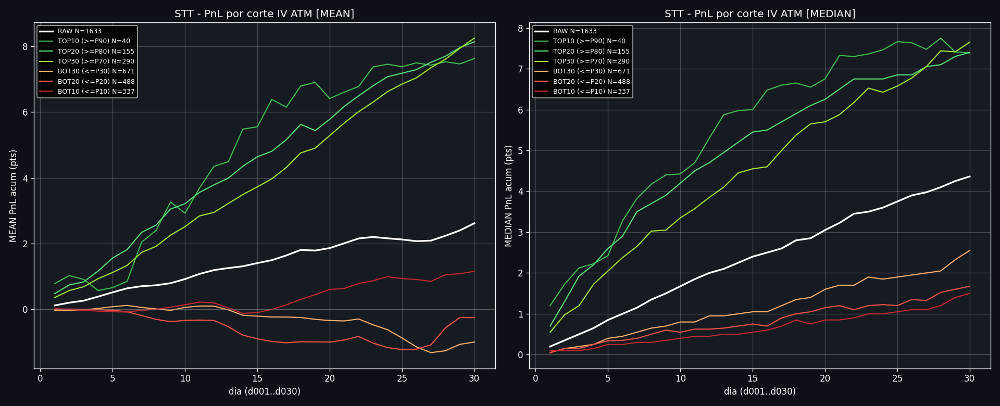
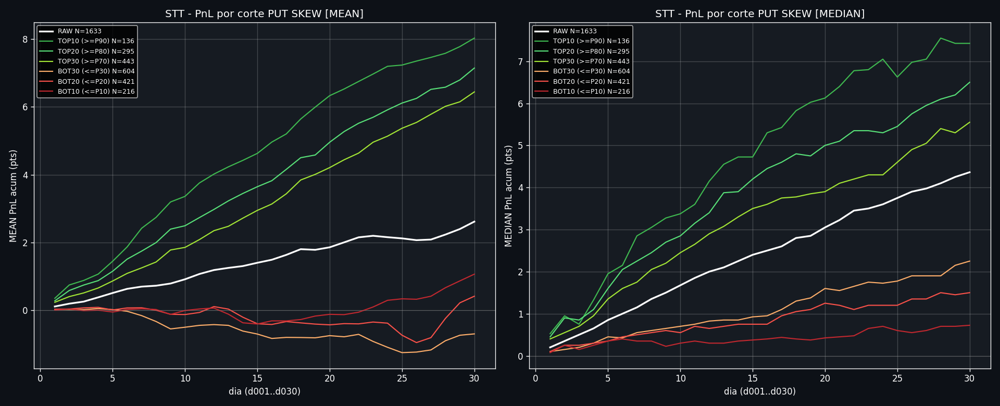
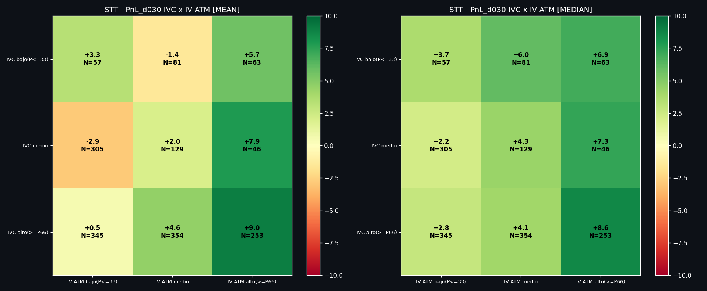
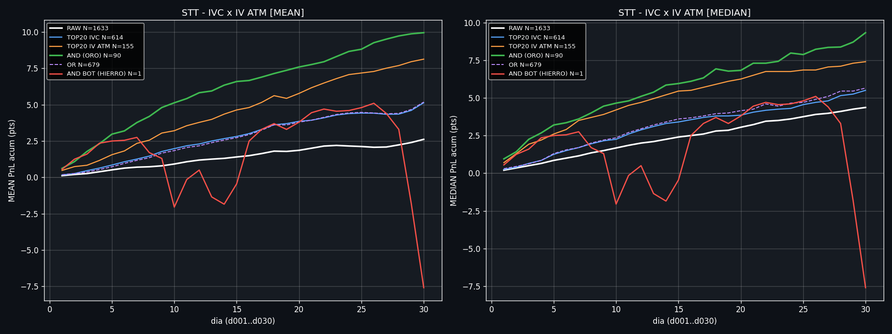
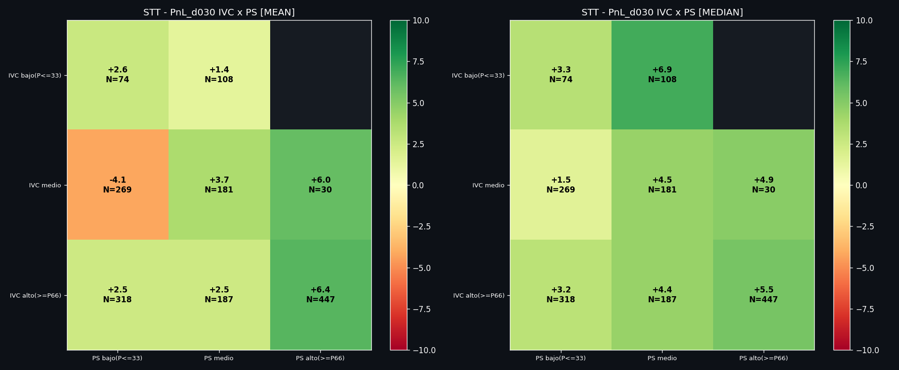
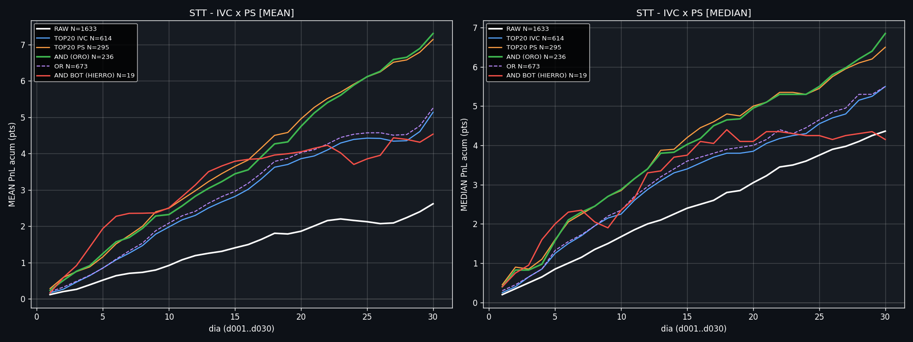
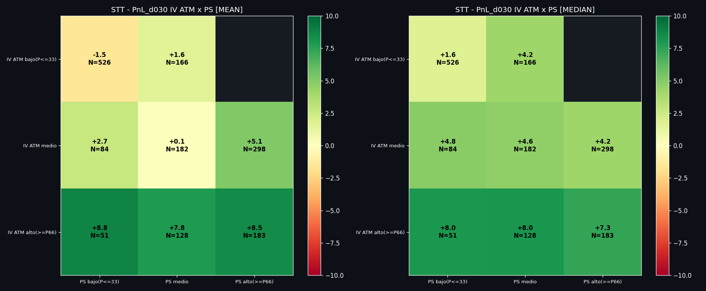
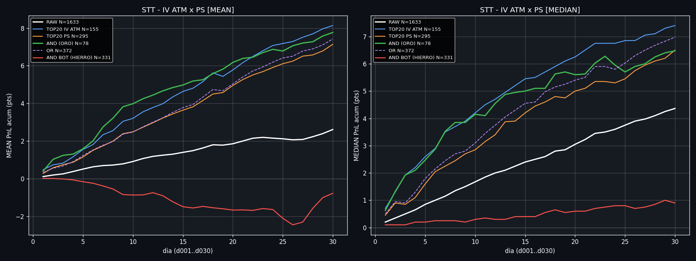
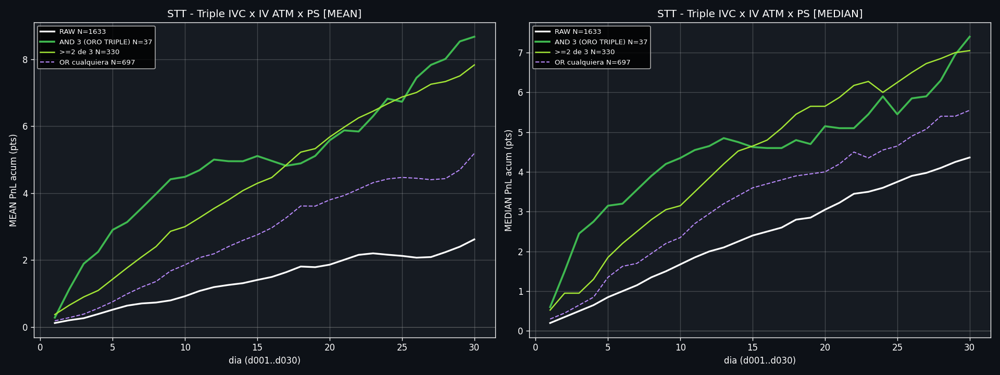

3 senales canonicas STT, todas de mercado (@dte160, snapshot 10:30 ET), en escala 0-100 sin lookahead:
IV_CONV = (iv_5d+iv_30d)/2 - iv_15d (concavidad de la PUT smile, Werner), percentil expanding ·
IV ATM = nivel IV ATM iv_50d, percentil expanding (eje vol, migrado desde VIX) ·
PUT SKEW NIVEL = skew_25d_vs50 (prima de cola en puts, 25d vs ATM) contra una
referencia historica FIJA (searchsorted, no expanding) ·
SQI_V2 = score de calidad 0.57*rank(theta/spot) + 0.43*rank(IV_CONV), aqui en version
proxy de mercado (comp1 via iv_25d@160, rho +0.91; proxy total rho +0.85 con el trade-level).
Bandas: FAVORABLE ≥80, NEUTRAL 20-80, ADVERSO ≤20.
Una variable, una definicion: desde el 2026-09-02 el panel de arriba y las tablas de abajo usan
exactamente las mismas tres senales. Antes las tablas puntuaban IV_CONV con las IV de las patas del trade
((iv_k1+iv_k3)/2 - iv_k2) y el panel usaba el proxy de mercado: coincidian solo el 78% de los dias en el umbral
P80, asi que la tabla prometia un resultado que la luz no seleccionaba igual. La version trade-specific no se ha
perdido: vive donde si existe un trade concreto -- la madre STT_CLASSIC_V9_MERGED_T0_mediana.csv y el scanner
LIVE, donde alimenta el score SQI_V2.
Suavizado: el RAW de las tres senales pasa por una mediana movil trailing de 3 dias
(ex-ante) antes de transformarse, para matar outliers de un dia en la fuente.
Por que PUT SKEW usa referencia fija: medido contra el PnL, el percentil expanding de esta senal
resta informacion respecto al valor crudo (el crudo gana +0.063 de Spearman, significativo por bootstrap por
dia). La referencia fija es la version del crudo en escala 0-100, asi que conserva su poder intacto. Umbrales equivalentes en
crudo: --.
Lectura de las bandas: IV_CONV e IV ATM se miden contra toda la historia desde 2019, asi que el
liston lo fijaron 2020 y 2022 y la parte alta de la escala es cada vez mas dificil de alcanzar. Cada tarjeta indica
cuando marco FAVORABLE por ultima vez: si esa fecha es lejana, la senal no esta rota -- esta diciendo que no
estamos cerca de un extremo historico.
Panel = hoy; tablas = backtest congelado (STT V9, 2019-2025). Misma definicion, fechas distintas.
Operativa (3 senales)
Como combinarlas
- IV ATM es el predictor mas fuerte en solitario (r ~+0.46) y PUT SKEW el segundo
(r ~+0.36), pero comparten mucha varianza entre si (rho ~+0.73): juntarlas anade menos de lo que parece.
- El par mas ortogonal es IVC x IV ATM (rho ~+0.29). Si se quiere diversificar de verdad, es esa la
pareja. (Esta ficha decia antes que la mejor pareja era IVC x PUT SKEW; con la version generica de IV_CONV y la
referencia fija de PUT SKEW las correlaciones cambian y ese consejo ya no se sostiene.)
- Aviso sobre IV_CONV: en 2019 esta senal esta invertida (r -0.52 ese ano). Por eso sus
cohortes BOT son casi todas de 2019 y salen positivas. No es una senal de doble filo: es un ano en que falla.
- Triple AND (las 3 ≥P80): N=37 trades, 25 de ellos de 2020. Es un detector de crisis, no un setup
recurrente. Tratarlo como curiosidad, no como regla.
- El HIERRO (las 3 en BOT20 a la vez) no tiene muestra suficiente para ser una regla de no-entrada.
- Como leer todas las tablas: debajo de cada cohorte va su reparto por anio. Si un solo
anio pesa mas del 60% (marcado en ambar), esa cifra describe un regimen concreto, no una expectativa para manana.
Seccion A · SENALES SOLAS (cortes percentil vs RAW)
A1 · IV_CONV pct_expanding
IV_CONV sola

A2 · IV ATM pct_expanding
IV ATM sola

A3 · PUT SKEW NIVEL
PUT SKEW sola

Seccion B · 2 A 2 (joint terciles + composite ORO/HIERRO)
B1 · IVC x IV ATM
IVC x IV ATM


B2 · IVC x PUT SKEW (par mas ortogonal)
IVC x PUT SKEW


B3 · IV ATM x PUT SKEW
IV ATM x PUT SKEW


Seccion C · 3 A 3 (las tres combinadas)
C · IVC x IV ATM x PUT SKEW
Triple composite
RAW + cada senal sola TOP20 + AND de las 3 (oro triple) + al menos 2 de 3 + OR cualquiera + AND BOT20 de las 3 (hierro triple).

Seccion D · Correlaciones / ortogonalidad
D · Spearman
Matriz de correlacion entre senales + poder predictivo
Lectura: el par de menor solapamiento es IVC x IV ATM; IV ATM x PUT SKEW es el que mas comparte (ambas suben cuando sube la vol), asi que combinarlas diversifica poco.